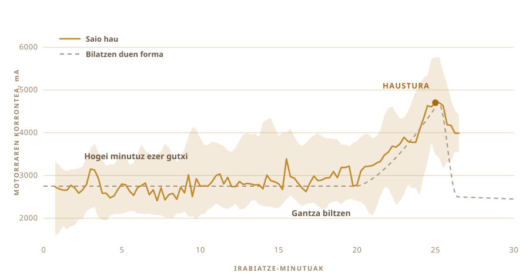

01
Jan besterik ez nuen egin
Nik ezagutzen dudan gheea herrietatik etortzen zen. Berrerabilitako potoetan, beti modu berean egin duen jendearen eskutik. Hain aspaldidanik egiten dute berdin, non han inork ez duen teknika bat bezala ikusten.
Ez du dendan saltzen duten latako zaporea.
Eta nik ez nuen sorta bat bera ere egin. Ez nekien esnea zenbat denbora utzi behar zen, ez zein hotz egon behar zuen jogurtak, ez zer soinu egin behar zuen lapikoak prest dagoenean.
02
Jogurtarekin hasten da, ez esnegain hutsarekin
Ghee industrial gehiena esnegainarekin hasten da. Modu tradizionala egun bat lehenago hasten da, batzuetan bi, esnegainarekin, egia esan irakinda murriztutako esne osoarekin, jogurt bihurtuta eta gau osoan garraztzen utzita.
Garraztze hori da gakoa, hori gabe gurin argitua ateratzen baita. Oso ona da, baina ez da ghee.

03
Bi egun mahaigainean
Esne epela, atzoko jogurtaren koilarakada bat nahastuta, eta gero bakean uzten duzu gau osoan, bakterioek beren lana egin dezaten. Nireari bi egun eman nizkion kanpoan.
Hori hartzidura da, eta hori da bertsio komertzialak saltatzen duen pausoa. Kultura biziek, gehienbat Lactobacillus, laktosa zeharkatzen dute eta azido laktiko bihurtzen. Esnea loditzen da. Garraztzen da. Goizean beste gauza bat da.
Hemendik dator on guztia. Laktosa apurtuta dago, eta errazago digeritzen da. Gantzak eta proteinak gorputzak errazago hartzen ditu. Azido butirikoa, hesteen mukosak benetan erabiltzen duen kate laburreko gantz-azidoa. Eta horrela egindako gheean gehiago dago esnegain gozoarekin bizkor egindakoan baino.
Ayurvedak aspaldidanik agintzen du zehazki bertsio hau.
Nik esan dezakedana da usaina kulturak ematen duela. Usain hori da honetan guztian sartzeko arrazoiaren zatirik handiena.

04
Metodoak izena du
Bilona. Jogurta lapikora, egurrezko irabiagailu bat barrura, eta gero aurrera eta atzera eragiten diozu gurinak amore eman eta gora igo arte.
Irabiagailua neuk egin nuen. Sarean topatzen nituenak itsatsita zeuden, eta batek ere ez zidan esaten zer itsasgarri zen. Tramankulu hori ordu erdi egoten da zure janarian, beraz ez nuen asmatzen ibili nahi. Zur gogorra, altzairu herdoilgaitzezko torlojuak, eta tiraderan lehendik neukan irabiatzeko ardatz bati lotuta.
Lau beso eta altzairuzko uztai bat lauei angeluan eusteko. Dena torlojuz dago, beraz berriro desmunta daiteke.


Ordu erdi inguru behar du eta denbora horretan gehienean ez da ezer interesgarririk gertatzen. Beste zerbaiti pasatzea amesten duzun lan horietakoa da, hain zuzen ere.

05
Orduan galdetu nuen
Hau egiten benetan dakien jendeak ez du errezetarik erabiltzen, eta bat ere ez zegoen nire sukaldean. Beraz, galderak txat-leiho batera joan ziren.
Zenbat denbora hartzitzen utzi. Zein hotz eduki jogurta. Zein bizkor biratu daitekeen marruskadurak lapikoa berotu eta gurina hondatu aurretik. Erantzun bakoitzak beste hiru irekitzen zituen.
Gero benetan esan nahi nuena galdetu nuen. Zuk egin dezakezu, besterik gabe?
Galdera jada ez zen nola egiten da gheea. Galdera beste hau bihurtu zen, zuk egingo zenidake?
06
Piztia
Bateriazko zulagailu bat. Irabiagailua, tiradera batetik eta burdindegi batetik. Plastikozko janari-ontzi bat elektronikarentzat, ebakitzeko ohol bat bizkarrezur gisa, eta gelditzeko botoi hori handi bat, motorra duen edozerk bat izan beharko lukeelako.
Ez zuen ia ezer kostatu eta nabari da. Eta hori da neurri batean asmoa.

- MotorraBateriazko zulagailua, estukailu batean eutsita
- IrabiagailuaZur gogorra eta altzairu herdoilgaitza, egina eta ez erosia
- BurmuinaRaspberry Pi, segundoko behin erregistratzen
- ZentzumenaMotorraren korrontea irabiatzeko, tenperatura-zunda bat egosteko
- GelditzeaBotoi handi bat, korrontea eteteko kableatua
07
Biratzea da zati erraza
Jogurta biratzea edonork egin dezake. Zaila dena noiz gelditu jakitea da.
Lehenago gelditzen bazara apar lodia duzu. Gehiegi luzatzen baduzu gurina berriro gazurean nahasten duzu eta galtzen duzu. Tartea aldatzen da gantzaren arabera, tenperaturaren arabera eta eguna nola doan.
Inork ez du hau kronometratzen. Entzunez egiten da. Barruko zarata zurrunbilo leun batetik zaplazteko irregular batera pasatzen da, eta orduan sartzen duzu eskua.

08
Zentzumen bat, eta bakarra
Beraz, zentzumen bat eman nion. Motorrak zenbat indarrez tiratzen duen zaintzen du.
Hogei minutuan, ezer ez. Karga 2700 mA inguruan egoten da eta hara eta hona dabil. Gero gantza biltzen hasten da eta zulagailuak zerbait lodiagoa bultzatu behar du. 4700era igotzen da eta une batez han eusten dio, eta orduan gurinak likidoa askatzen du eta karga jaisten da.
Kamerarik ez, modelorik ez, ezer burutsurik ez. Igo eta gero jaisten den zenbaki bat.

09
Bere kabuz gelditu zen
Martxan jarri zen. Beste zerbait egitera joan nintzen, eta bueltatu nintzenean itzalita zegoen jada.
Hori zurbileko gurin-aleak gazur lausoan. Inork ez zion ordua esan. Senti zezakeen gauza bakarretik atera zuen.

10
Gero eskuak berriro
Aleak bildu eta bola bat osatu arte estutu. Ur hotzetan garbitu, behin eta berriro, ura garbi ateratzen den arte.
Barruan uzten duzun gazur tanta bakoitza erreko da hurrengo pausoan. Zati hau ez nuen automatizatu, eta ez nuen horretarako gogorik ere.


11
Bigarren zentzumena
Motorraren kargak esaten zion makinari noiz gelditu. Egosketa beste arazo bat da, orain ez duzu une bat bilatzen, bati eusten saiatzen zara.
Beraz, lapikoa plaka elektriko batera doa, tenperatura-zunda bat barruan, eta erregulagailu batek plaka piztu eta itzaltzen du zenbakia zuk jarritako tokian mantentzeko. 250 F-tan jarri nuen, 121 °C inguru, eta ordu bat inguru han egon zen.
Ordu batez lapikoa zaintzen duen pertsona bati burua joango zaio. Erregulagailua ez da aspertzen.

12
Ordu bat kolorea begiratzen
Gurina lapikora, eta hortik aurrera bere bidea egiten du gehienbat.
Urtzen da. Apar zuria eta zarataduna egiten du. Ura lurruntzen da eta zarata itzaltzen doa. Esne-solidoak hondora joan eta marroi jartzen dira, eta usaina gurinetik zerbait txigortura aldatzen da. Lapikoa isiltzen denean eta likidoa garbi ateratzen denean, eginda dago.
Hala ere gehiena begiratu nuen, atsegina delako begiratzea. Baina nik egin nuen ezerk ez zuen aldatu nola atera zen.


13
Ghee
Garbia, anbar kolorekoa, eta txikitan hustutzen nituen poto haien usaina du. Hori zen nire proba bakarra, eta gainditu zuen.

Potoetara epel eta garbi joan zen. Hurrengo egunean zurbil eta pikortsu gatzatua zegoen.
Etiketa bat jarri nien. Daraman hitza nepalierazkoa da, ghee esan nahi du, eta ondoko kodeak orri honetara ekartzen zaitu berriro.

Inoiz egin dudan lehen sorta. Egia esan ez nuen nik egin.
14
Bederatzi poto bigarren aldian
Lehen saioak bi poto eman zituen eta hori izan zen dena. Honek eskudela bete zuen.
Bederatzi poto. Bi poto altu torloju-tapadunak kameratik gertuen, sei klip-itxieradunak erdian, eta txiki bat urrutiko zutoinaren ondoan.

Etiketa bestelakoa da orain. Lehen bi potoek paperezko etiketa arrosa bat zeramaten, goialdean OUR STORY inprimatuta. Hauek film gardenekoak dira, beraz gheea letren atzetik ikusten da, eta ondoko kodeak orri honetara ekartzen zaitu oraindik ere.


Lehen sortaren hori zurbil berean gatzatu zen, eta ez nengoen horretaz ziur.
15
Zer nahi dut hurrena
Oraintxe makinak bi gauza daki. Noiz utzi irabiatzeari, eta zein tenperaturari eutsi.
Hurrena begiak eta belarriak eman nahi dizkiot. Kamera bat, aparra nola hausten den eta solidoak nola marroitzen diren ikus dezan, eta beroa berak aukera dezan nik emandako zenbaki bati eutsi beharrean. Eta mikrofono bat, gheea prest dagoela esaten dizunaren zati handi bat lapikoa isiltzea delako.
Zulagailuak bigarren txanda bat ere egin lezake, seguru asko. Gurina lapikoan dagoenean eragin nahi du, eta hortxe dago jada motor bat ezer egin gabe.
Eta gero begizta. Hartzidura-denbora aldatu, abiadura aldatu, ateratzen dena dastatu, funtzionatu duena gorde, eta berriro. Hogeita hamar saio eta niri bilatzea bururatuko ez zitzaidan toki batean amaituko luke.
Nik ez nekien inoiz oso ondo non begiratu, dena den.
Zerez eginda dagoen, non neurtzen duen, eta benetan zer zaintzen duen.